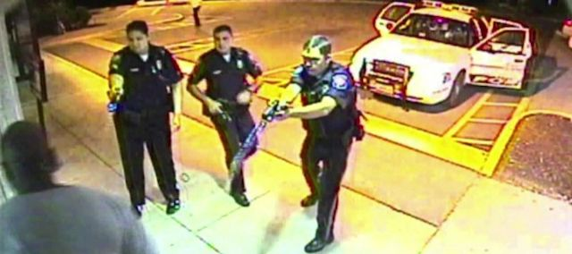

2020-06-07 08:00

The following is based on an unpublished 2011 article.
When a policeman “Tases” you, a seven-ounce gun shoots nitrogen-propelled darts which puncture up to one inch of clothing and deliver 50,000 volts to your central nervous system through filaments that stretch up to ten meters.
The manufacturer’s website describes the product as “turning off” a person for up to 30 seconds. Police departments are buying up the thousand-dollar devices like hotcakes. Close to a million are in police use in the United States because law enforcement officers say they need new “non-lethal” tools in their arsenal for dealing with violent criminals without resorting to shooting them. Tasers are also available for personal use in 43 states (not MA or RI).
Despite public relations campaigns to sell these weapons, in which willing subjects, often police-friendly journalists, allow themselves to be zapped by a Taser while being lowered gently to the ground by officers, the “real world” deployment of these new “Electronic Control Weapons” (ECW’s) has been much more destructive.
That’s because Tasers, while less lethal than firearms, still kill. And they can and are routinely abused by police officers.
In one case of Taser abuse, a conservative student, Andrew Meyer heckled John Kerry at a campaign speech, refused to stop talking, and was then zapped with 50,000 volts after pleading, “Don’t Tase me, bro.”
In 2009 in Oakland, California, officer Johannes Mehserle reached for his Taser to “turn off” Oscar Grant, who was already lying on a subway platform on his stomach in handcuffs. Mehserle instead shot Grant in the back with his service revolver, killing him. This fatal confusion of Taser for firearm has occurred several times in other cities.
But, even taking Mehserle at his word that he had confused the service revolver for a Taser, the officer’s purpose for using a Taser on a handcuffed subject was not because Mehserle was ever in danger — but to simply compel “compliance.”
In 2009 in Oklahoma, Lona Varner, an 86 year old stroke victim on oxygen, was Tasered in her bed after her grandson called for medical assistance. Mrs. Varner, who had dementia, has lashed out at police who were stepping on her oxygen.
Also in 2009, Prospero Lassi, a Southwest Airlines employee, suffered a diabetic seizure. While being transported to the hospital and still experiencing seizures, he bumped the arm of an officer who then Tasered him 11 times while he was still unconscious.
Again in 2009 in Gwinnett County, Georgia, Deacon Frederick Williams suffered an epileptic seizure but was taken to jail instead of to the hospital. A video of his being Tasered five times while in police custody and then dying on-screen was seen by millions.
At a Phillies game, a rowdy fan ran around the field until he was Tasered by a policeman. The crowd, which had first laughed at the man’s hijinks, booed the official for excessive brutality. There had never been any concern the man posed a danger to anyone. He was simply holding up a baseball game.
Many victims of Tasers, both by abuse and homicide, are those without medical care, with mental and psychological problems, the poor, and very often minorities.
There have been numerous cases of protestors being Tasered in civil disobedience actions where only passive resistance was being offered. In former times, protesters would be led to a van in plastic handcuffs, booked, and that was it. Increasingly, people are now being Tasered for “non compliance.”
At some point, the level of physical coercion of citizens a Taser provides stops being preservation of the peace and simply becomes suppression of dissent. It is not surprising, then, that the United Nations and human rights groups have reacted with alarm to their increasing use in peaceful protests, using the word “torture.”
And the abuse of Tasers is only growing.
Between 1999 and 2004 there were approximately 71 Taser-related deaths in the US and Canada, but the death rate is rising fast. Between 2001 and 2008 there were 334 deaths and many cases of abuse like those mentioned which have been recorded in some cases by an officer’s own cruiser or body camera, or which have been posted on YouTube and Vimeo.
The use of this technology is outpacing community control of it.
The company which manufactures the Taser ascribes the many fatalities to “preexisting medical conditions” or offers an explanation popularized by a former medical examiner, Vincent DiMiao, who was hired by the company to promote so-called “Excited Delirium Syndrome” (EDS) as a rationale for the deaths. Other studies of the Taser include those by the military, which never met a weapon system it didn’t like, and law enforcement agencies like the Department of Justice, which have never questioned the EDS explanation.
Neither the American Medical Association nor the American Psychological Association recognize Excited Delirium Syndrome, but the American College of Emergency Physicians does recognize it as a cause of death. However, the definition provided by fellows Matthew Sztajnkrycer and Amado Baez of the Mayo Clinic offers little more than cocaine and struggle with police officers as contributing factors and this does not logically rule out excitation by Taser. They write:
The actual cause of cocaine-associated ED and sudden death is unknown. Studies have suggested that the elevated temperatures seen in these patients is due to abnormal changes in brain dopamine receptors. The vast majority of these patients died after a struggle. Such struggles increase the levels of circulating epinephrine, and may also result in a metabolic acidosis.
The National Association of Medical Examiners also recognizes EDS, but also qualifies it: “Chronic drug use is necessary to induce the changes in the neurochemistry that lead to agitated delirium.” Many of the cases of “EDS” linked to the many Taser fatalities did not involve drugs; merely repeated shocks.
Almost all studies purporting to demonstrate Taser safety are based on delivering shocks to healthy volunteers who do not fight the 50,000 volt blast to their central nervous systems. However, a University of California (San Francisco) cardiology study found the device to be far more lethal than the company would have us believe. And a “real world” statistical study of 185 deaths by White and Ready at the University of Arizona found that Tasers are widely abused or misused by officers who either shock subjects repeatedly when not in any real danger themselves, or who fail to recognize that the subject is already in some kind of medical or drug-related distress in which using a Taser contributes to their fatality.
Dartmouth Police officers receive only six hours of training on the Taser X26, a device which according to its marketing literature has “greater incapacitating power than the Advanced Taser M26 ECD.” How many hours of firearms training do officers receive in comparison? In Los Angeles, that number is 113. According to Massachusetts law 501 CMR 8.05, the Taser curriculum may be anything Taser International provides. Given the company’s adamant protestations that the device is non-lethal, the provided information is either incorrect, should be augmented, or the device regulated in order to eliminate fatalities.
Dartmouth Police rules for Taser use permit it to be used on minors over the age of 10 and seniors under the age of 70. How do you feel about having your 13 year old daughter or 67 year old grandmother Tasered? Even if they are on drugs or are experiencing dementia?
Dartmouth Police rules permit the device to be used for non-violent (Level 3) “non-compliant behavior.” If the Taser is intended to keep officers from harm, the public should also be kept from harm during its deployment. Dartmouth’s Level 4 is a more proper threshold for use of a device which can potentially kill. Normally Level 5 is the only one in which a firearm should be used. Why then is the criterion for a Taser so much lower, given lethality which is not common to the other remedies in its class (spray, restraint, and canine)?
The Dartmouth police guide to force and firearms states that Tasers may be employed “for self-defense, defense of another against unlawful violence or attack to his/her person or property, to overcome resistance to arrests, to conduct searches and seizures, prevent escapes from custody, preserve the peace, prevent the commission of crimes, or prevent suicide or self-inflicted injury.” Some of these categories include fleeing (which presents no danger to an officer) or are sufficiently vague (“preserving the peace”) as to be downright frightening from a civil liberties perspective.
But where is the justification for using the device in the first place? What are the cases of officer injury which could have been avoided only by the use of a Taser, and not pepper spray, a K9, bean bags, or some other non-lethal means? Is it a great new toy, like your iPhone, or is the Taser really necessary? Perhaps the department’s “less than lethal” force reports could shed light on this.
At a minimum, it is something a community itself should review and control.
Without knowing a subject personally, an officer can unwittingly use a Taser on a disabled, pregnant, minor, senior, handicapped, intoxicated, epileptic, uremic, acidotic, autistic, deaf, or diabetic person; a pacemaker patient, someone with an undiagnosed heart problems, stroke, neurological problems, psychotic, or someone on drugs for whom electroshock could contribute to death. Most of these people are not going to be able to respond to an officer’s commands predictably or quickly-enough (especially for an impatient officer), and especially given a disability or impairment.
We have seen numerous examples where officers have had no idea what type of medical or psychological episode a subject was having but “turned off” the subject with a Taser. The solution, it seems to me, is to limit Tasers only to situations where someone’s life is in danger. Simple “non-compliance” is not a good enough reason to use these lethal devices.
As in many communities, Dartmouth Police regulations do not place restrictions on Tasering subjects even after they have been taken down or handcuffed. Other communities do impose this restriction. What purpose, other than running the risk of killing someone, does repeatedly shocking a person who’s already in cuffs?
According to Dartmouth police guidelines, there is nothing to prevent Tasering fleeing subjects, even though the officer is not in danger. Would Dartmouth officers actually Taser a rowdy fan running around at a Crapo Field little league game? After all, we have a precedent in Philadelphia. Yet nothing is worth risking a human life just so a game is not delayed. If officers can show restraint in imminent pursuit of motor vehicles, they can also treat a Taser with as much caution as an automobile.
Dartmouth and Massachusetts regulations call for an EMT to be called to treat a Tasered subject, yet there is no requirement that officers using Tasers be able to revive a subject or even carry a defibrillator. There have been numerous cases where an apparently healthy young drug-free man was Tasered and died within 15 minutes, well before EMTs could arrive.
Some communities (for example, Mountain View and Boise) restrict the use of Tasers effectively to situations in which the use of a service revolver would be permitted. Rather than supplement less-than-lethal options like K9 and spray, in these communities Tasers are an extension of options to be used only where lethal force would be employed. This is a sensible recognition of the fact that Tasers are lethal. Shouldn’t we have such restrictions on their use in every community?
The Town of Dartmouth’s guidelines for the use of a Taser are so vague that it is not clear how “excessive force” would ever be defined. Any claim of “resisting” by an officer would be justified by vague rules and, by definition, whatever force an officer applied would not be regarded as excessive. With a service revolver it’s obvious if a mistake has been made. But how do you define excessive force when Tasers are used? And what about transparency and oversight?
For example, is there a process for community review whenever a Taser is deployed in Dartmouth and neighboring communities? In cases of lethal force, the District Attorney is to be notified. However, for less than lethal force, only a shift commander is notified, according to Dartmouth police regulations.
According to a University of Arizona study, there is a striking correlation between multiple Taser shocks and death. This is something that cannot be safely left solely to the judgment of an officer who wants to believe in the non-lethality of the device. What, then, is the maximum number of shocks which officers are permitted to administer to a person? What happens if an officer exceeds this number? What are the legal ramifications? And are members of Select Boards and City Councils aware of the insurance and legal risks?
In Charlotte, North Carolina a jury awarded a 17-year-old’s family $10 million for a wrongful death claim against the Taser manufacturer. Cities are directly on the hook for damages if officers violate civil rights, ignore Taser operating instructions, or fail to provide adequate medical care for a subject after being Tasered. The city of Albuquerque paid out $275,000; Moberly, Missouri paid out $2.4 million; Antioch, California paid out $750,000; Fort Collins, Colorado $225,000; and dozens of other cities paid out sums capped by $100,000 or $200,000 limits of state liability for wrongful deaths. Several Illinois cities joined in a suit against the manufacturer because Tasers had been marketed as non-lethal and the cities were themselves being sued in wrongful death cases. Max Vasquez was awarded a $1 million settlement from the Ventura County police department. A man who was having a stroke and was Tasered for “non-compliance” won a half million dollar settlement from the city of Riverside, California. A man in Marin County, California who was Tasered for falling and refusing to go to the hospital was awarded $1.9 million. Waveland, Missouri had to settle an epidemic of police abuse cases in which town officers improperly used Tasers on people who were stopped, detained or arrested. Even law enforcement officers accidentally shocked by Tasers have sued for lost wages and injuries. Rosalind Jones of Galveston, Texas was training officers on the use of Tasers when she suffered lasting nerve damage. Two officers in Las Vegas won similar cases. While Massachusetts has limits on punitive damages, the lifelong care of a paraplegic or coma victim of Tasering would be quite expensive.
The Taser X26 permits downloads of usage statistics. What procedures are in place for an independent body to collect and review these statistics? Again, accountability is the concern. Currently, according to Massachusetts law St.2004, c. 170 data must be conveyed to various state offices and transmitted to a university for analysis within one year. This same information should be conveyed monthly to municipal government and made available to the public long before it is bundled for academic studies.
Finally, Massachusetts is one of eight states that restrict the use of Tasers to law enforcement officers. Why? Because Massachusetts recognizes the lethality of the device:
Section 131J. No person shall possess a portable device or weapon from which an electrical current, impulse, wave or beam may be directed, which current, impulse, wave or beam is designed to incapacitate temporarily, injure or kill, except: (1) a federal, state or municipal law enforcement officer…
We, as a community, ought to severely restrict the use of such equipment. Tasers should only be used by specially-trained officers with EMT training or used only when EMT’s are en route. It should be up to a community, not the police, to adopt guidelines for Taser use similar to those used by Mountain View, California and elsewhere.
Technology can be extremely seductive. Whether you’re a teacher, auto mechanic, or a police chief, you want the latest gadgets and technology. But Tasers are not toys. They’re not pepper spray. They’re not bean bags. They’re not K9’s, which might chew someone’s hand up a bit. Tasers can and do kill. They can also be easily abused for trivial or punitive purposes, as many examples demonstrate. For all these reasons there must be restrictions and community oversight on their use.
Additional References
Safety
Sample Abuses
86-year old bedridden woman Tasered:
Diabetic seizure victim Tasered:
Political Expression suppressed:
Other Filmed Taser incidents